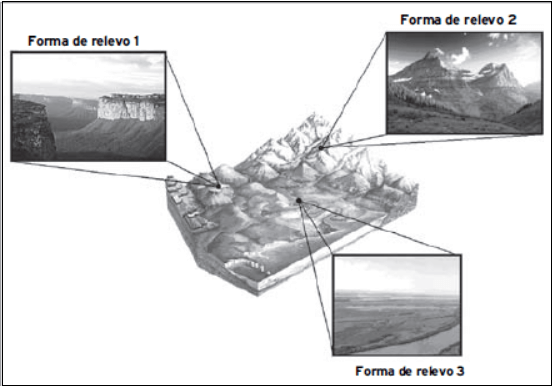
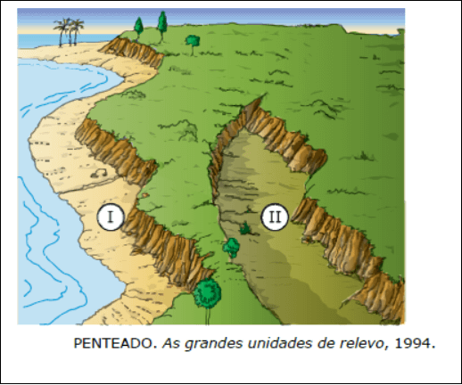
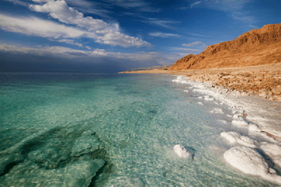
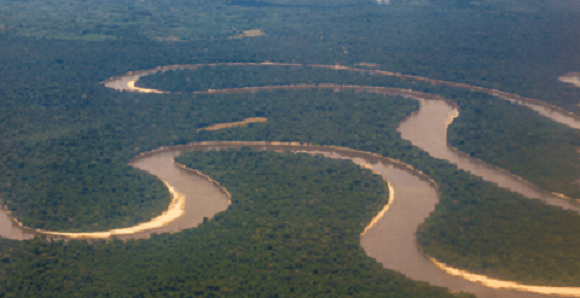

Conteúdo: Relevo; Planaltos; Planícies; Montanhas; Depressões.
Objetivo: Identificar e comparar as grandes unidades do relevo terrestre
Questão 01
(UCPel 2016) O relevo corresponde às diversas configurações da crosta terrestre. A Geomorfologia, disciplina científica que estuda as formas de relevo, sua origem, estrutura e os processos responsáveis por sua evolução, apresenta diversas classificações das formas do relevo. Uma classificação que compreende as principais formas de relevo apresenta os seguintes tipos:
I. Áreas da superfície, localizadas em altitude inferior à das regiões próximas ou abaixo do nível do mar, podem ser formadas de várias maneiras: por deslocamento do terreno, remoção de sedimentos, dissolução de rochas ou até por queda de meteoritos.
II. Grandes áreas elevadas, resultantes do choque de placas tectônicas, como o da Placa Euroasiática Ocidental com a Indo-Australiana, que deu origem a um conjunto específico desse tipo de forma, também são chamadas de dobramentos modernos.
III. Elevações de altitudes variadas, em que predomina o processo de erosão e cuja composição rochosa pode ser de rochas sedimentares, cristalinas ou metamórficas, apresentam superfície irregular, como serras e chapadas, e são delimitadas por áreas rebaixadas em um dos lados.
IV. Áreas de superfície relativamente plana, formadas por rochas sedimentares e nas quais predominam os processos de decomposição e acúmulo de sedimentos, na maior parte das vezes, são encontradas em baixas altitudes, mas também podem ocorrer em regiões elevadas.
Os tipos de relevo descritos correspondem, respectivamente, a:
a) I - Depressões; II - Planícies; III - Montanhas; IV - Planaltos.
b) I - Planícies; II - Montanhas; III - Planaltos; IV - Depressões
c) I - Montanhas; II - Planícies; III - Depressões; IV - Planaltos.
d) I - Planaltos; II - Depressões; III - Planícies; IV - Montanhas.
e) I - Depressões; II - Montanhas; III - Planaltos; IV - Planícies
Questão 02
(UFLA-MG 2011) Observe o esquema:

Apresentam-se em seguida as proposições I e II:
I. Superfícies formadas pelo processo de sedimentação, com cerca de 200 m de altitude.
II. Superfícies que resultam do trabalho da erosão em áreas de bacias sedimentares.
Assinale a alternativa que apresenta a relação CORRETA entre o esquema e as proposições:
a) A forma de relevo 3 associa-se à proposição II
b) A forma de relevo 1 associa-se à proposição I
c) A forma de relevo 1 associa-se à proposição II.
d) A forma de relevo 2 associa-se à proposição I.
Questão 03
(UFRGS 2019) Assinale a afirmação correta sobre o relevo da superfície terrestre e sua constante transformação.
a) O relevo terrestre é o resultado da ação de tectonismo, chuva, vento, cursos d'água, mares, geleira, sem envolver a ação antrópica.
b) A ação do agente de erosão fluvial é considerada predominante em ambientes de climas com elevado regime de precipitação e gera formas de relevo chamadas fiordes.
c) A ação do vento em ambientes desérticos e costeiros promove um processo deposicional contínuo e a ausência de processos erosivos.
d) O intemperismo químico das rochas é responsável pelo processo progressivo de dissolução e pela ação da chuva e dos cursos d'água.
e) As planícies envolvem elevações superiores a 200 metros e são diferenciadas das depressões, as quais estão relacionadas a prolongados processos de erosão em sua gênese.
Questão 04
(UFPR 2015) As formas ou conjuntos de formas de relevo participam da composição das paisagens em diferentes escalas. Relevos de grandes dimensões, ao serem observados em um curto espaço de tempo, mostram aparência estática e imutável; entretanto, estão sendo permanentemente trabalhados por processos erosivos ou deposicionais, desencadeados pelas condições climáticas existentes.
Esses processos, originados pelas forças exógenas, promovendo, ao longo de grandes períodos de tempo, a degradação (erosão) das áreas topograficamente elevadas e a agradação (deposição) nas áreas topograficamente baixas, conduzem a uma tendência de nivelamento da superfície terrestre.
Isso só se completará caso não haja interferência das forças endógenas, que podem promover soerguimentos ou rebaixamentos terrestres. Há que se considerar, ainda, a ação conjunta das duas forças e as implicações altimétricas geradas por ocorrências de variações do nível do mar.
Adaptado de MARQUES, J.S. Ciência Geomorfológica. In: GUERRA, A. J. T.; CUNHA, S. B. (Orgs.) Geomorfologia: uma atualização de bases e conceitos. Rio de Janeiro: Bertrand,1994, p. 23-45.
Tendo como referência o texto acima e os conhecimentos de geomorfologia, a ciência que estuda as formas do relevo, identifique as seguintes afirmativas como verdadeiras (V) ou falsas (F):
( ) O relevo é o resultado da atuação das chamadas forças endógenas e exógenas. Os processos endógenos estão associados à dinâmica das Placas Tectônicas e os exógenos relacionados à atuação climática.
( ) Durante a era Cenozoica, as formas de relevo, em grande escala, permaneceram estáveis em consequência do equilíbrio entre forças exógenas e endógenas.
( ) Os deslizamentos de terra, fluxos de lama e detritos, que ocorrem em grandes maciços rochosos, como é o caso da Serra do Mar, apesar de resultarem muitas vezes em catástrofes e danos à população, podem ser processos naturais de degradação, que participam da evolução das formas do relevo.
Assinale a alternativa que apresenta a sequência correta, de cima para baixo.
a) V – V – F – F.
b) F – V – F – V.
c) F – F – V – V.
d) V – F – V – V.
e) V – F – V – F.
Questão 05
(URCA CE) Sobre Relevo, assinale a alternativa incorreta.
a) A "Tectônica de Placas" é a grande responsável pelos fenômenos que acontecem no interior da Terra: os terremotos, as erupções vulcânicas e a formação das grandes cadeias de montanhas.
b) Tanto a origem das formas de relevo quanto as modificações que elas sofrem com o tempo são resultantes de forças internas (que provêm do clima, ou dos seres vivos) e forças externas (que deram origem às rochas mais antigas, aos vulcões, aos dobramentos, etc.) da Terra.
c) Depressões são áreas deprimidas ou rebaixadas em relação às regiões vizinhas; e Planícies são áreas planas onde, normalmente, há sedimentação, isto é, acumulação ou deposição de sedimentos.
d) Montanhas são as formas elevadas do relevo, que se destacam por apresentar altitudes superiores às das regiões vizinhas. As mais elevadas são as que resultam de "dobramentos" e existem tanto nos continentes quanto no fundo dos oceanos.
e) Podemos definir relevo como sendo o modelado da superfície terrestre. As principais formas são: montanhas, planaltos, planícies e depressões.
Questão 06
Um professor, apresentou em sua prova de geografia a figura a seguir e demandou dos alunos a identificação das formas de relevo I e II.

Acertaram a questão os alunos que a denominaram da seguinte forma:
a) I – Planície, II – depressão relativa
b) I – Depressão relativa, II – Planície
c) I – Depressão absoluta, II – Planície
d) I – Planície, II – Planalto
e) I – Depressão absoluta, II – Planalto
Comentário:
A) A forma de relevo identificada com o número I corresponde a uma planície situada entre o oceano e a escarpa de um planalto. O número II representa uma depressão relativa, área rebaixada situada entre planaltos.
A planície junto ao litoral corresponde a uma área com baixa altitude, formada pela deposição de sedimentos provenientes do oceano e das regiões mais elevadas ao seu redor. A depressão relativa é geralmente formada por um longo processo erosivo (muitas vezes do tipo diferenciado) que origina formas relativamente aplainadas, mais baixas que as áreas do seu entorno.
Questão 07
(UFCG PB 2007) O relevo, dependendo da atuação dos agentes internos e externos, pode apresentar diversas formas. Quanto às características das principais formas de relevo, é CORRETO dizer que:
I. As serras são relevos estreitos bem agrupados com topos regulares. Em geral, são alinhamentos de montanhas recentes.
II. Os planaltos são as superfícies mais elevadas, com ondulações bruscas. Geralmente são delimitados por planícies que os circundam.
III. As planícies são superfícies planas, de baixa altitude, nas quais, geralmente, os processos de deposição são abundantes.
IV. As depressões são áreas rebaixadas. Sua origem pode estar ligada a processos de erosão ou a afundamentos provocados por falhamentos.
V. As montanhas são elevações suaves e aluviais do terreno. São formadas por agrupamentos de morros e escarpas sedimentares.
A sequência correta é:
a) I, II e IV.
b) III e IV.
c) II, III e V.
d) II e V.
e) I e III.
Questão 08
A figura seguinte representa o relevo da América Latina.
Fonte: adaptada de https://pixabay.com/pt/mapa-do-mundo-mapa-mapa-de-relevo-1804890. Acesso em: 10 abr. 2017.
Associe os números apresentados na figura com as formas de relevo:
( ) Planalto das Guianas
( ) Planície Amazônica
( ) Planalto Brasileiro
( ) Cordilheira dos Andes
( ) Planície Platina
( ) Sierra Madre
Assinale a alternativa que apresenta correta correspondência dos números e formas de relevos:
a) 3, 5, 6, 4, 2, 1.
b) 5, 3, 2, 1, 4, 6.
c) 4, 2, 6, 1, 5, 3.
d) 3, 4, 5, 2, 6, 1.
e) 3, 5, 4, 2, 6, 1.
Questão 09
Na imagem abaixo, temos a representação do Mar Morto, paisagem que apresenta as menores altitudes dentre as terras emersas do planeta Terra, caracterizando uma área de:

Paisagem do mar morto, no Oriente Médio
a) planícies latitudinais
b) formação basáltica
c) acentuada altimetria
d) baixa deposição sedimentar
e) baixa deposição sedimentar.
O mar morto, com 423 metros abaixo do nível do mar, caracteriza uma área de depressão absoluta.
Questão 10
Observe a imagem a seguir:

Visão aérea de um curso d'água em uma floresta equatorial
A fisionomia retratada na foto acima é naturalmente típica de:
a) regiões de planície, por estar em um relevo aplainado que não propicia o escoamento em velocidade dos cursos d'água, resultando na formação de meandros.
b) regiões de planalto, pois se manifesta em superfícies onduladas geralmente delimitadas por escarpas, o que se percebe pelas oscilações existentes no leito do rio.
c) regiões de planície, por se tratar de uma bacia de drenagem composta por uma floresta densa, o que só acontece nesse tipo de relevo
d) regiões de planalto, uma vez que os processos erosivos são favorecidos pela velocidade de vazão do rio.d
e) depressões absolutas, porque nessas regiões a pressão atmosférica é maior e resulta em uma ausência de coesão na organização das paisagens.
A imagem apresentada é uma foto aérea da Floresta Amazônica, que naturalmente se encontra em uma região de planície. Nesse tipo de relevo, não há grandes declividades, o que não favorece o escoamento elevado dos cursos d'água, explicando a formação de meandros ao longo do leito dos rios, como no caso da imagem em questão